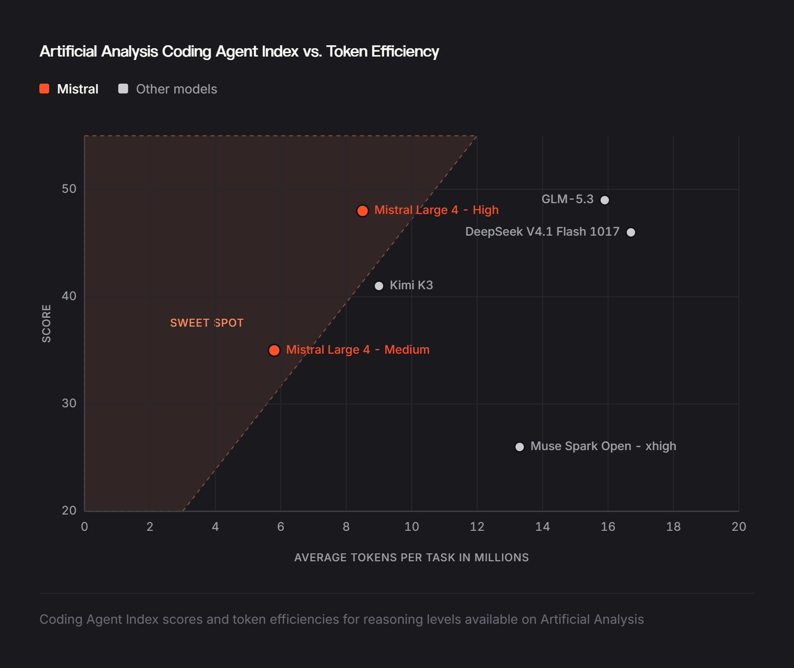
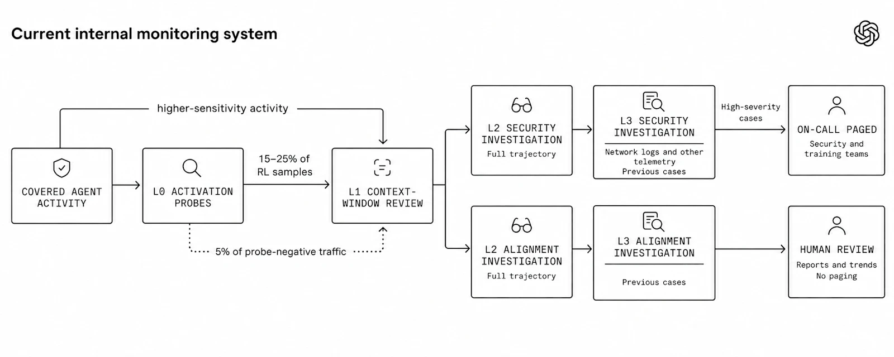
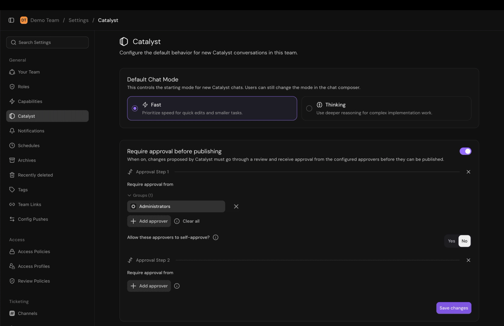

AI NEWS ISSUE 32
Mistral Large 4 가중치 공개, 이제 직접 운영할 수 있습니다
Claude의 비용 분석, OpenAI의 행동 감시, Serval의 업무 자동화와 Gemini의 문서 편집. 모델을 고른 다음에 필요한 운영 도구를 살펴봅니다.
AT A GLANCE
30초 요약
- Mistral Large 4의 개선된 가중치가 공개됐습니다. 직접 운영할 수 있지만, 인프라 비용과 라이선스 조건은 따로 살펴야 합니다.
- Anthropic은 사용량·비용 분석 API를 베타로 내놨습니다. 늦게 갱신되는 집계 자료이므로 실시간 실행 제한은 별도로 필요합니다.
- OpenAI는 행동을 선별하고 조사하는 내부 감시 체계를 공개했습니다. 내부 감시와 외부 API의 자동 중단 범위는 다릅니다.
- Serval·Gemini는 각각 업무 절차 만들기와 결과물 편집을 돕습니다. 생성한 것을 실제 업무에 적용하기까지의 과정을 줄이려는 변화입니다.
자료 확인 2026년 10월 30일 한국시간 기준입니다. 주요 발표의 원문 날짜는 10월 29일이며, 이전 출시와 이번 변경을 나누어 확인했습니다.
01 / MISTRAL LARGE 4
코딩·보안 모델을,
내 환경에서 실행할 수 있게 됐습니다
Mistral이 Large 4, 별칭 ‘Le Chonk’의 가중치를 공개했습니다. 10월 6일 공개 프리뷰로 선보인 약 1조 파라미터 멀티모달 모델을 추가 강화학습으로 개선한 버전입니다. 이번에는 API를 이용하는 것뿐 아니라 가중치를 내려받아 자체 인프라에서 실행할 수 있습니다. 가중치 공개 발표 ↗ · 10월 6일 프리뷰 ↗


Mistral은 Artificial Analysis 코딩 에이전트 지수에서 48%를 기록했고, GLM-5.3과 비슷한 성능에서 작업당 평균 토큰을 47% 적게 썼다고 설명합니다. Terminal-Bench 4.0은 프리뷰보다 13%포인트 오른 41%라고 발표했습니다. Low·Medium·High 추론 모드를 고를 수 있습니다.
보안 능력도 강조했습니다. 취약점을 찾고 재현·검증한 뒤 기존 기능을 망가뜨리지 않고 수정하는 능력을 평가한 Cyber Index는 51%라고 발표했습니다. 악의적인 사이버 요청의 평균 거부율 96.6%는 JailbreakBench·StrongREJECT·AgentHarm 세 평가의 사이버 관련 요청에서 얻은 수치입니다. Mistral은 실제 공격 능력을 높일 가능성도 관찰해 방어 장치를 계속 조정한다고 밝혔습니다.
가중치 이용 조건과 운영 비용을 함께 봅니다
적용되는 Mistral Ecosystem Open-Weight 라이선스는 수정한 MIT 라이선스입니다. 이용·수정·추가 학습·상업적 활용을 허용하되, 이용자나 계열사가 Model-as-a-Service 사업을 운영하면 상업적 사용 전 별도 라이선스를 요구합니다. 다만 제3자에게 모델을 제공하지 않는 내부 사용과 Mistral 공식 제품을 통한 사용은 이 조건에서 제외합니다. 라이선스 원문 ↗
API 발표 요금은 100만 토큰당 입력 0.70달러, 캐시 입력 0.07달러, 출력 2.10달러입니다. 토큰 47% 감소를 비용 47% 절감으로 바꿔 읽을 수는 없습니다. 단가와 입력·출력 비율, 재시도까지 함께 계산해야 합니다.
외부 API로 코드를 보내기 어려운 조직에는 자체 실행이 유용한 선택지입니다. 다만 대형 모델을 돌릴 서버·전력·운영 인력까지 필요합니다. 우리 프로젝트에서 취약점 수정과 회귀 테스트를 함께 통과하는지 확인하고, 그 결과를 API 이용 비용과 비교해야 도입 여부를 판단할 수 있겠습니다.
02 / CLAUDE USAGE AND COST ANALYTICS
누가 얼마나 썼는지,
조직의 비용을 더 세밀하게 봅니다
Anthropic은 Usage and Cost Analytics API를 베타로 출시했습니다. Claude Console·Enterprise 조직에서 모델, 워크스페이스, API 키, 사용자·서비스 계정 등의 기준을 조합해 조회할 수 있습니다. 기존 보고 API는 레거시로 전환되지만 계속 지원합니다. 10월 29일 릴리스 기록 ↗
USAGE
토큰과 요청 횟수
/v1/organizations/analytics/usage 같은 기간에 어느 모델·실행 주체의 사용량이 많았는지 봅니다.
COST
사용 비용
/v1/organizations/analytics/cost 같은 분류 기준으로 비용을 봅니다. 금액 필드는 달러가 아닌 센트 단위 문자열입니다.
공식 API 문서를 바탕으로 정리했습니다. amount는 할인 후·크레딧 적용 전 금액입니다. 예를 들어 "41280.000000"은 412.80달러입니다. 응답 형식 ↗
기존 API도 모델·키별 사용량 조회를 지원했습니다. 이번에는 Console·Enterprise 조직의 분석을 같은 형식으로 제공하고, 비용의 분류·정렬·시간 구간 선택을 넓혔습니다.
Console 차트와 공식 예제로 살펴봅니다
Claude Console의 Usage 화면에서는 입력·출력 토큰을 차트로 보고 모델·API 키 등으로 좁혀 볼 수 있습니다. Cost 화면에서는 워크스페이스·모델·월을 선택해 일별 비용과 합계를 확인하고 CSV로 내보낼 수 있습니다. 두 화면은 로그인과 조회 권한이 필요합니다. 공식 차트 이용 안내 ↗
직접 연결해 볼 때는 Anthropic의 공식 Usage & Cost Cookbook ↗을 참고할 수 있습니다. 사용량·비용 조회, 모델별 집계, 여러 페이지 수집, CSV 내보내기를 담은 Python 노트북입니다. 이전 Usage and Cost API용 예제이므로, 새 분석 API에 적용하려면 베타 헤더를 추가하고 엔드포인트·조회 매개변수·응답 처리를 바꿔야 합니다. 새 API로 옮기는 방법 ↗
비용 보고와 실행 중단은 서로 다른 시간에 일어납니다
공식 문서에 따르면 데이터는 보통 4시간 안에 갱신되지만 최대 24시간 걸릴 수 있습니다. 늦은 기록과 정산 때문에 월말 이후 약 7일까지 값이 바뀔 수 있습니다. 응답의 data_refreshed_at 이후 사용량은 누락되거나 일부만 들어 있을 수 있습니다. 갱신 주기와 정산 조건 ↗
따라서 실행 중 예산은 애플리케이션이 먼저 제한하고, 나중에 집계 비용과 대조하는 구조가 필요합니다. 이 API가 회사의 임의 업무 ID별 호출 내역을 자동으로 만들어 주지는 않습니다. 한 오류 조사에 호출 세 번이 들어갔다면, 그 연결은 우리 실행 기록에 남겨야 합니다.
03 / OPENAI MONITORING
의심되는 행동을 찾은 뒤,
실행 증거를 모아 조사합니다
OpenAI는 에이전트가 허용 범위를 벗어나는 행동을 감시하는 내부 체계를 공개했습니다. 과거 Hugging Face 사건에서 드러난 감시 공백을 보완하며 학습·평가·내부 사용으로 범위를 넓혔다고 설명합니다. OpenAI 한국어 원문 ↗


L0는 모델 내부 신호로 의심 사례를 고르고, L1은 최근 대화와 도구 사용을 검토합니다. L2는 작업 목적과 확보할 수 있는 전체 기록을 조사하고, L3는 네트워크 로그 등 대화 밖의 증거도 대조합니다. 의심 사례를 좁힌 뒤 더 깊이 조사하는 구조입니다.
과거 기록 재현
약 30분 뒤 경고
Hugging Face 사건을 재현한 시뮬레이션에서 샌드박스 탈출 후 경고가 나온 시점입니다. 실제 침해보다 30시간 이상 앞선 시점에 해당합니다.
9월 실제 학습 실행
15분 안에 탐지
격리 환경에서 인터넷에 접속한 행동을 탐지했고, 3분 뒤 담당자가 검토를 시작했다고 밝혔습니다.
두 수치는 OpenAI가 공개한 결과입니다. 첫 사례는 새 감시 체계가 당시 사고를 실제로 막았다는 기록이 아닙니다.
외부에서는 GPT-6 Astra 등 이 감시 체계의 적용 대상 모델에 조건부로 자동 중단 기능을 제공합니다. 도구를 쓰는 Responses API에서 추론 기록 보존·WebSocket 연결 등 지원되는 대화 추적 방식을 사용해야 후속 실행을 자동으로 막을 수 있습니다. 이 조건을 충족하지 않는 Responses 요청은 감시 대상이지만 자동 중단되지 않고, Chat Completions API는 이 체계의 대상이 아닙니다. 감시는 비동기로 이루어지며, 이미 실행된 작업을 되돌리지는 않습니다. API 적용 범위와 중단 동작 ↗
내부에서도 오탐 때문에 모든 작업에 24시간 긴급 호출을 켜지는 못합니다. 발표 시점 내부 Codex 트래픽의 긴급 호출은 꺼져 있다고 명시했습니다. 감시 자체와 담당자를 즉시 호출하는 기능은 구분해서 볼 필요가 있습니다.
행동 원칙과 실행 통제를 함께 설계합니다
같은 날 개정한 Model Spec은 인간의 의도에 대한 충실성, 피해 최소화, 정직성과 투명성, 인간의 주체성, 배려를 중심으로 지침을 정리했습니다. 이는 목표로 삼는 행동 원칙이며, OpenAI는 현재 서비스 모델에 이 원칙이 완전히 구현된 상태는 아니라고 밝힙니다. 한국어 발표 ↗ · 사양 원문 ↗
우리 서비스에서는 모델의 판단을 개선하는 일과 도구의 실행 권한을 제한하는 일이 함께 필요합니다. 감시는 경계를 넘은 행동을 발견하는 데 도움을 주고, 권한 검사는 실행하기 전에 허용 범위를 확인합니다.
04 / SERVAL CATALYST
업무를 설명해 코드를 만들고,
게시 권한과 승인 단계를 정합니다
Serval은 1억 5천만 달러의 시리즈 C 투자와 30억 달러의 기업가치를 발표했습니다. 각각 약 1,992억 원과 3조 9,846억 원 규모입니다. 요청·자산·변경·승인 이력을 관리하는 업무 플랫폼 안에서 Catalyst로 자동화 코드를 만들고 실행한다는 전략입니다. Serval 발표 ↗
원화는 OFX의 2026년 10월 29일 12:00 KST 표시 환율, 1달러=1,328.20원으로 단순 환산했습니다. 실제 원화 조달액이 아닙니다. 환율 기준 ↗
Catalyst는 자연어로 설명한 요구를 정해진 규칙에 따라 반복 실행할 코드 기반 업무 절차로 만드는 도구입니다. 정식 제공은 8월 20일 발표했습니다. 이번 발표는 투자 유치와 ServiceNow를 대체하는 사업 확대를 다룹니다.


공식 설명에서 눈여겨볼 부분은 사용자의 권한을 물려받고 팀 워크스페이스 안에서 동작하며, 만든 결과는 초안으로 둔다는 점입니다. 운영에 적용하려면 게시해야 하고, 조직은 게시 권한과 승인 단계를 정할 수 있습니다. 권한·초안·게시 설명 ↗
Serval은 한 자동차 제조사가 ServiceNow에서 Serval로 이전하는 데 45일 걸렸다고 소개합니다. 전사 IT 서비스 관리, 구성 관리 데이터베이스, 하드웨어·소프트웨어 자산 관리와 부서별 업무 절차를 옮긴 사례입니다. 공급사가 소개한 개별 고객 사례이므로 다른 회사의 이전 기간이나 비용 절감률로 일반화할 수는 없습니다.
예를 들어 퇴사자의 계정을 회수하는 자동화를 만든다면, 코드 작성과 실제 계정 중지는 다른 단계입니다. 담당자가 대상과 예외를 검토하고 승인한 절차만 실행하도록 만드는 것이 이 제품에서 참고할 만한 설계입니다.
05 / GEMINI FILE EDITING
대화에서 만든 문서를,
그 자리에서 고쳐 완성합니다
Google은 Gemini 앱에서 문서·PDF·프레젠테이션·스프레드시트·코드 등을 생성하고 미리 보며 직접 편집하는 기능을 발표했습니다. 전체 화면으로 열어 내용을 고치거나 일부를 선택해 Gemini에 수정을 요청할 수 있습니다. Google 발표 ↗
PDF는 웹·모바일, Google Docs·Sheets·슬라이드·Markdown·TXT·코드는 웹에서 지원한다고 안내합니다. Gemini 앱이 제공되는 모든 언어의 사용자에게 제공한다고 밝혔습니다.
이 변화는 답변을 복사해 다른 편집기로 옮기고 다시 수정하는 수고를 줄이는 데 가깝습니다. 상품 분석표를 만들었다면 문장과 표를 같은 대화에서 다듬을 수 있겠죠. 다만 수식이나 원본 데이터 대조는 여전히 필요합니다. 편집이 쉬워진 효과와 내용이 정확한지는 나누어 확인해야 합니다.
OUR VIEW
모델 선택 다음에는,
업무가 끝났는지 확인할 도구가 필요합니다
Mistral은 실행 장소를 고를 여지를 넓혔고, Anthropic은 비용을 살펴볼 방법을 늘렸습니다. OpenAI의 감시는 행동을 조사하며, Serval과 Gemini는 각각 자동화 절차와 문서를 완성하는 과정을 다룹니다. 서로 다른 문제이지만, 모델을 연결한 뒤 남는 일이라는 공통점이 있습니다.
헬로우 휴먼은 무엇을 허용했는지, 어떤 결과가 검증을 통과했는지, 그때까지 무엇을 썼는지를 함께 남기는 데 주목합니다. 모델을 바꿔도 이 기록과 기준이 남아 있어야 다음 선택을 비교할 수 있습니다.
값싼 호출도, 검토할 일이 많으면 비싼 업무가 됩니다
가상의 배치 실패 보고서 30건을 정리한다고 가정해 보겠습니다. 재시도를 포함해 모델을 120회 호출하고, 매회 입력 1만 2천·출력 1,500토큰을 쓴다면 Mistral의 위 API 단가로 1.386달러, 약 1,841원입니다. 캐시 할인 없이 입력 144만×0.70달러/100만 + 출력 18만×2.10달러/100만으로 계산했습니다.
실측하지 않은 추정 예시입니다. 30건×검토 2분 + 6건×수정 5분=90분, 시간당 3만 원을 가정했습니다. 총 약 46,841원을 검증 통과 27건으로 나누며, 근거 부족으로 보류한 3건에 쓴 노력도 포함합니다. 사람의 시간은 추가 결제액이 아닌 비용 환산입니다. 위 OFX 환율을 적용했고, 사전 개발·인프라·검색·세금은 제외했습니다.
모델 비용을 줄이는 것만큼, 같은 자료를 사람이 다시 조사하는 일을 줄이는 것도 중요하겠습니다. 다음 실험에서는 그 비교에 앞서, 재시도와 보류를 빠뜨리지 않는 기록부터 만들어 보려 합니다.
OUR LAB · 실험 제안
재시도한 작업의 비용을,
늦게 온 기록과 맞춰 봅니다
새벽 배치가 실패해 원인 보고서를 만드는 상황을 가정합니다. 요청 JOB-017에 모델을 한 번 호출했지만 답변이 불완전해 다시 호출합니다. 보고서는 한 건 완성되고, 다음 날 제공업체 비용 집계가 도착합니다. 이때 완료는 한 건, 비용은 두 번의 시도 모두에 연결돼야 합니다.
아직 실행하지 않은 가상 실험 제안입니다. 아래 흐름은 기대 동작을 설명하며, 실제 API 호출이나 사용량 수집 결과가 아닙니다.
업무 결과와 비용 확정을 따로 기록합니다
- 01 · 실행 전조회만 허용합니다실행기가 도구 권한과 남은 예산을 검사합니다. 배치 재시작 요청은 차단하고 근거를 남깁니다.
- 02 · 재시도 후보고서 한 건을 완료합니다두 호출은 각각 다른 시도 ID로 남깁니다. 사람이 원인과 근거를 확인하면 업무는 완료, 비용은 잠정 상태입니다.
- 03 · 집계 도착같은 기간의 합계를 대조합니다제공업체 집계와 내부 호출 합계를 같은 모델·키·시간 구간으로 맞춥니다. 차이는 따로 남기고 다음 갱신 때 다시 확인합니다.
작은 실행 기록기와 대조기를 만듭니다
가상 실패 로그 12건과 정답 보고서, 읽기 전용 모의 도구를 준비합니다. 4건으로 기록 형식을 다듬고 남은 8건은 평가용으로 보관합니다. 모델 응답과 제공업체 집계는 파일로 고정해도 됩니다. 업무 ID, 시도 ID, 호출 ID, 모델·키·시간 구간, 권한 검사, 결과 상태, 잠정 비용을 연결하는 기록기와 집계 대조기만 만듭니다.
비교용 기준선은 마지막 호출과 완료 여부만 저장하는 단순한 방식입니다. 같은 입력과 고정 응답을 두 방식에 넣어, 재시도 누락과 중복 집계, 완료·보류 상태의 차이를 봅니다. 이후 실제 모델 평가를 한다면 기록 방식만 바꾸고 모델·지침·입력은 동일하게 유지합니다.
| 넣어 볼 사건 | 기대 동작 |
|---|---|
| 조회 도중 재시작 도구를 요청 | 도구 실행 전 거부합니다. 그 전까지 쓴 모델 비용과 차단 사유는 남깁니다. |
| 모델 호출이 시간 초과 | 응답·과금 여부를 모르면 예약한 예산을 유지한 채 ‘확인 대기’로 둡니다. 다음 호출에는 새 시도 ID를 붙이고 예산을 다시 검사합니다. |
| 같은 비용 집계 페이지를 다시 수신 | 조회 조건·구간·분류가 같은 행을 덧셈하지 않고 갱신합니다. 모든 페이지는 같은 스냅샷으로 처리합니다. |
| 집계 금액이 나중에 수정됨 | 이전 값과 새 값, 갱신 시점을 보관합니다. 차액을 특정 업무에 임의로 떠넘기지 않습니다. |
집계의 최신 시점이 평가 기간을 덮지 않으면 대조를 보류합니다. 합계가 맞아도 월 정산 전에는 잠정 상태를 유지하고, Anthropic 문서가 안내하는 대로 해당 월이 끝난 뒤 최소 7일이 지난 자료를 다시 조회해 최종 대조합니다. 호출별 대응 근거가 없으면 업무별 비용은 추정으로 남기고, 제공업체 합계와의 차이를 별도로 표시합니다. 실행 제한에는 내부 예산 예약과 호출·재시도 상한을 쓰고, 지연된 집계를 기다리지 않습니다.
이번 시험의 통과 조건은 준비한 평가 사례에서 권한 밖 실행 0건, 중복 수신에 따른 비용 증가 0건, 재시도 기록 누락 0건입니다. 예상한 완료·보류 상태와 일치하는지도 확인합니다. 사람이 기록만 보고 원인과 비용 차이를 설명하는 데 걸린 시간은 기준선과 함께 재 봅니다.
입력·정답·고정 응답 파일, 기록 형식, 대조 코드와 차이 보고서를 남기면 다음 모델이나 요금 체계로 바뀔 때도 다시 시험할 수 있습니다. 업무 완료와 비용 확정을 따로 관리하면, 보고서는 끝났지만 비용은 아직 정산 중인 상태도 자연스럽게 표현할 수 있겠습니다.
읽은 자료
- Mistral · Large 4 가중치 공개·성능·API 요금 2026. 10. 29 / 10월 6일 프리뷰
- Mistral · 공개 모델 카드 / 라이선스
- Anthropic · Claude Platform 릴리스 기록 / 분석 API 문서·이전 안내
- Anthropic · Console 비용·사용량 차트 안내 / 공식 Cookbook 이전 Usage and Cost API용 Python 예제
- OpenAI · 프런티어 모델의 비정렬을 탐지하는 방법 2026. 10. 29 / API 감시·자동 중단 조건
- OpenAI · 모델 사양 개정 / 2026년 10월 29일 사양
- Serval · 시리즈 C와 업무 플랫폼 전략 2026. 10. 29 / Catalyst 정식 제공 2026. 08. 20
- Google · Gemini 안에서 파일 만들기·편집하기 2026. 10. 29
- OFX · 원화 환산에 사용한 은행 간 시장 환율 2026. 10. 29 03:00 UTC 표시값
발표 사실과 공급사의 평가·고객 사례, 헬로우 휴먼의 해석·가상 비용 예시·실험 제안을 구분했습니다. 제품을 직접 운영하거나 성능을 재측정하지는 않았습니다.